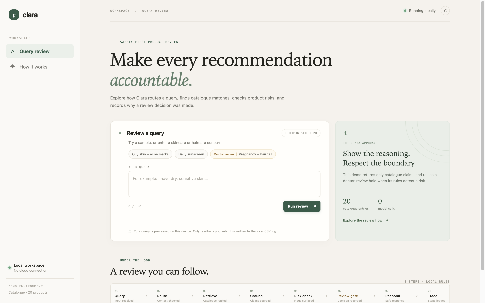
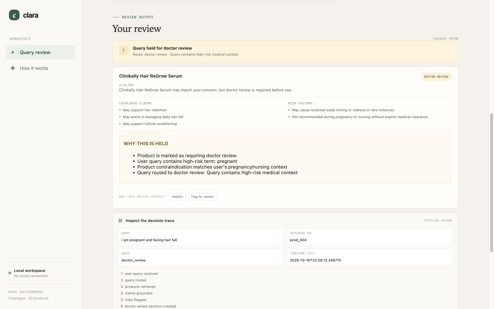
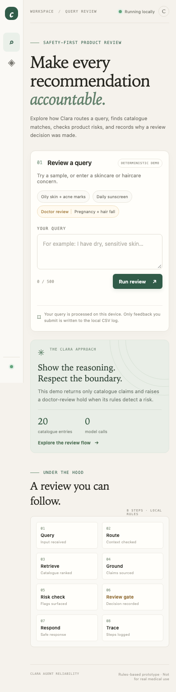

Route
Rule-based checks classify the query and flag selected high-risk terms.
CLARA AGENT RELIABILITY
A local, rules-based demo for tracing how a product query moves through catalogue retrieval, claim and risk checks, and a doctor-review hold.

THE APPROACH
Clara demonstrates a small control layer around a manually maintained product catalogue. It is a project demo, not a healthcare service.
Rule-based checks classify the query and flag selected high-risk terms.
Keyword matching ranks products from the checked-in JSON catalogue.
Catalogue claims, risk factors, and contraindications are surfaced with each result.
When a rule requires review, the result shows the hold and the recorded decision path.
FROM THE LOCAL DEMO
These existing screenshots show the local interface and a sample review result. They are static images; this presentation does not run that workflow.


RESPONSIVE LOCAL UI
The screenshot is from the existing local interface. The static presentation remains read-only at every viewport.
WANT TO RUN IT?
The Python server provides the query-review and optional feedback endpoints on your own machine. This hosted presentation does not provide either endpoint.
From the repository root · Python 3.9+
python3 -m src.web_app --host 127.0.0.1 --port 8765SCOPE AND LIMITS